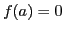
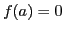
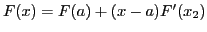
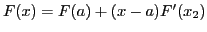
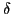
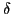
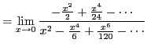
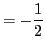

Next: Rule for evaluating the Up: Theorem of mean value; Previous: Evaluation of a function Contents Index
Given a function of the form
 such that
 and
such that
 and  ; that is, the function takes on the indeterminate
form
; that is, the function takes on the indeterminate
form
 when
when  is substituted for
is substituted for  . It is then required to find
. It is then required to find
Since, by hypothesis, and
Applying the Theorem of Mean Value to each of these functions (replacing  by
by  ),
we get
,
, and
.
.
Since and
),
we get
,
, and
.
.
Since and  , we get, after canceling out
, we get, after canceling out  ,
,
L'Hospital's Rule13.4:
Let  and
and  be differentiable and
.
Further, let
be differentiable and
.
Further, let  be nonzero in a punctured neighborhood of
be nonzero in a punctured neighborhood of  ,
(for some small ,
for
).
Then
,
(for some small ,
for
).
Then
The rule is named after the 17th-century French mathematician Guillaume de l'Hospital, who published the rule in his book l'Analyse des Infiniment Petits pour l'Intelligence des Lignes Courbes (translation: Analysis of the infinitely small to understand curves) (1696), the first book about differential calculus, which consisted of the lectures of his teacher Johann Bernoulli. In particular, this rule is in fact due to Johann Bernoulli (1667 - 1748).
[fontsize=\scriptsize,fontfamily=courier,fontshape=tt,frame=single,label=\sage] sage: limit((cos(x)-1)/x^2,x=0) -1/2 sage: limit((-sin(x))/(2*x),x=0) -1/2 sage: limit((-cos(x))/(2),x=0) -1/2
This verifies
 |
||
 |
||

|  | ||
|  |
[fontsize=\scriptsize,fontfamily=courier,fontshape=tt,frame=single,label=\sage] sage: limit((cos(x)-1)/x^2,x=0) -1/2 sage: limit((-sin(x))/(2*x),x=0) -1/2 sage: limit((-cos(x))/(2),x=0) -1/2
This verifies